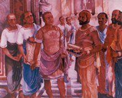
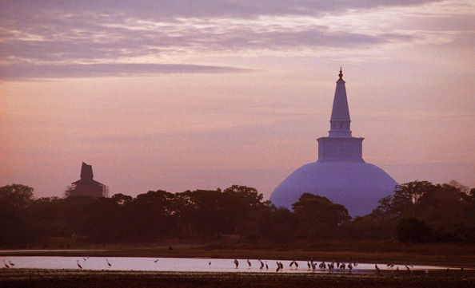

History of Sri Lanka
History of Sri Lanka
|
Sri Lanka was ruled by Kings from
ancient times as far back as the 3rd century B.C spanning over
2.500 years as recorded history depicts. Recent excavations show
that even during the Neolithic Age, there were food gatherers and
rice cultivators in Sri Lanka. Very little is known of this
period; documented history began with the arrival of the Aryans
from North India. The Aryans introduced the use of iron and an
advanced form of agriculture and irrigation. They also introduced
the art of government. Of the Aryan settlements, Anuradhapura grew
into a powerful kingdom under the rule of king Pandukabhaya.
According to traditional history he is accepted as the founder of
Anuradhapura. |

First Embassy
|
|
|
|

Anuradhapura
|
As a result of invasions from South India the kingdom of Anuradhapura fell by the end of the 10th century A.D. Vijayabahu 1 repulsed the invaders and established his capital at Polonnaruwa in the 11th century A.D. Other great kings of Polonnaruwa were Parakrama Bahu the Great and Nissanka Malla both of whom adorned the city with numerous buildings of architectural beauty. |
|
Invasion was intermittent and the capital was moved constantly until the Portuguese arrived in 1505, when the chief city was established at Kotte, in the western lowlands. The Portuguese came to trade in spices but stayed to rule until 1656 in the coastal regions, as did the Dutch thereafter. Dutch rule lasted from 1656 to 1796, in which year they were displaced by the British. During this period the highland Kingdom, with its capital in Kandy, retained its independence despite repeated assaults by foreign powers who ruled the rest of the country. In 1815 the kingdom of Kandy was ceded to the British and thus they established their rule over the whole island. |
|
|
Galle Fort
|
Page Editor : click here to open page editor page